About
Hello, my name is Noah Christensen. I am currently a 4th year Computer Science major attending the University of California, Riverside. I am scheduled to graduate on June 15th, 2020 and receive a Bachelors of Science in Computer Science. Currently, my knowledge covers the coding languages of C, C++, C#, Java, and Matlab. I have learned to use both the Unity and Unreal 4 game engines. Lastly, I learned html5 in order to make this website. I am particularly interested in backend development in regards to programing as a whole. However, I still hope to advance in all programming aspects. My passion is in creating across the programming fields, and I find game development explores this passion the most.
Projects
Imbedded Invaders
A game created for the UCR class Imbedded Systems using C. Based on the classic arcade game Space Invaders. I was able use to the pixel-based layout and state diagrams in order to make a working game on simple hardware (e.g. Microcontroller, Nokia Display, joysticks, pushbuttons, breadboard).
Project Link: https://docs.google.com/document/d/1XsEwOXn_x7GUp7IglQ-ALVCeMHCyK4_8860pu110yVc/edit?usp=sharing
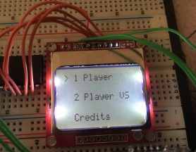 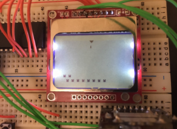 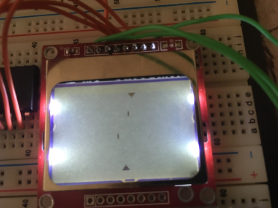 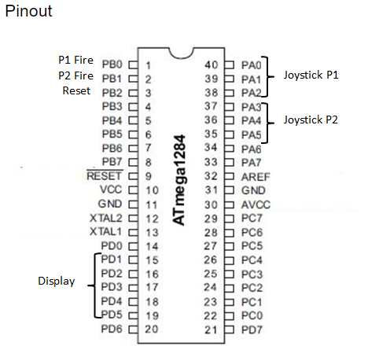Room Escape in Unreal
A very simple game made in Unreal Engine 4 done in the Udemy course: Unreal Engine C++ Developer. The player begins in a room and must escape. The mechanics are basic movement and the ability to pick up objects. To escape the room the player must place objects of enough weight onto a trigger volume. This will allow the player to escape through the door that would otherwise be closed. Only two scripts were used. One to rotate the door open and closed when enough weight was on the pressure plate. Another script to grab and release objects with physics.
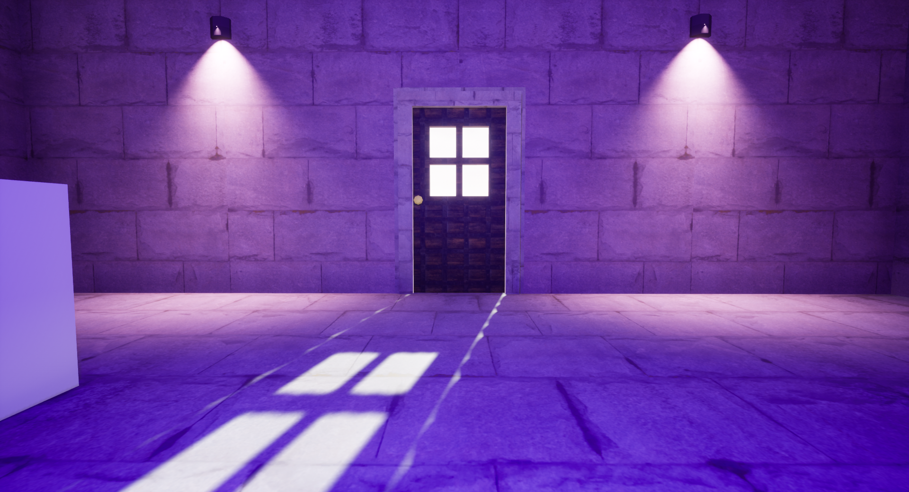 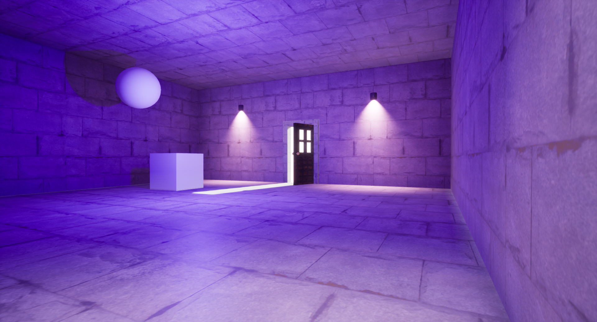 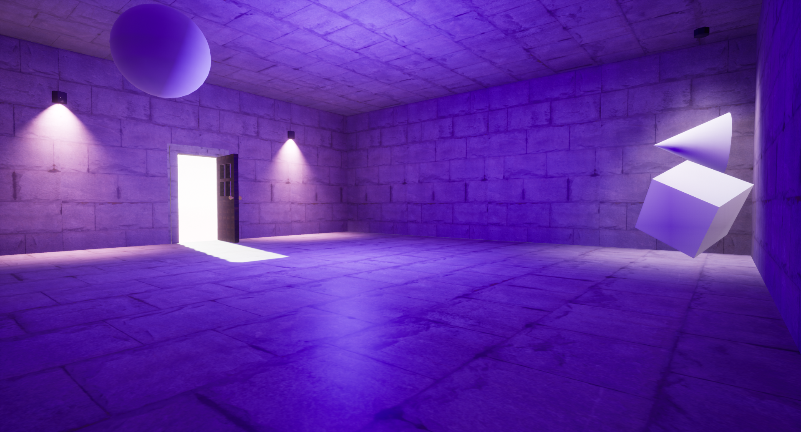Action Platformer(WIP)
A 2D pixel-based platformer made in Unity. The player controls a person in a brown trench coat equipped with a gun and a sword. The player can use the gun and sword in both the air and ground with each having a different animation. The weapons are used to defeat various enemies. The enemies currently include a stationary gun-man, a walking knife-man, and a drone that drops bombs that explode on the ground. I made extensive use of prefabs to create multiple enemies and produce effects and bullets when necessary. Using the 2D physics component of Unity, I have also managed to control many clashing aspects of the game. The final version of the game will likely be based in a city and the player will go from rooftop to rooftop fighting different enemies to traverse until the end.
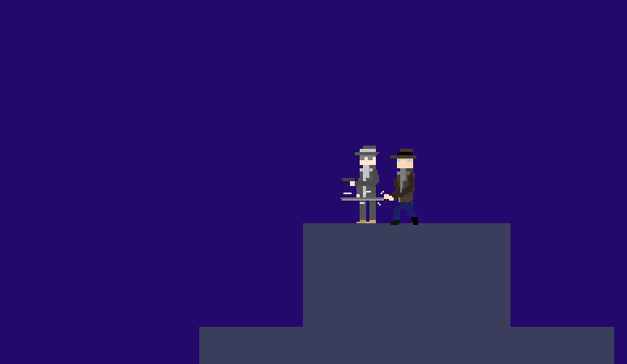 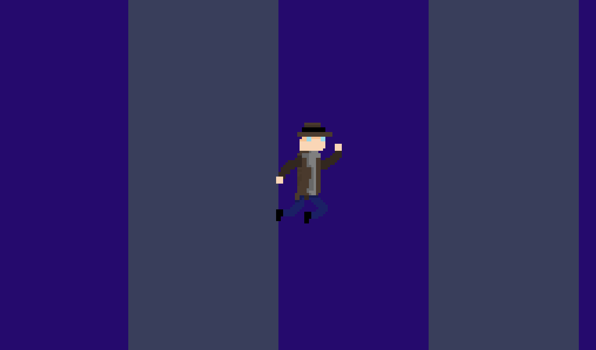 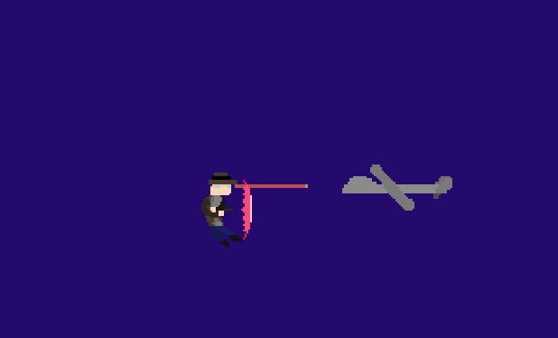 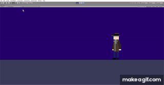Contact
Email: nchri003@ucr.edu
Cell: (661) 244-7912
LinkedIn: noah-christensen